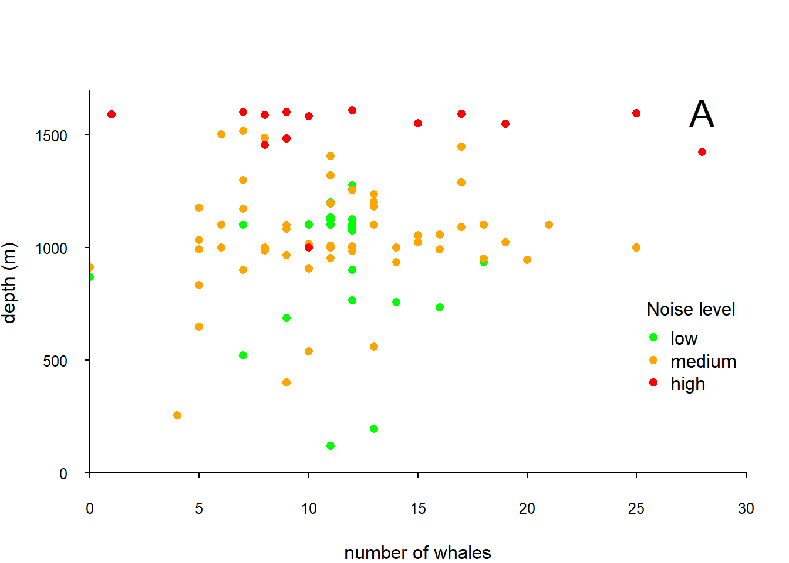
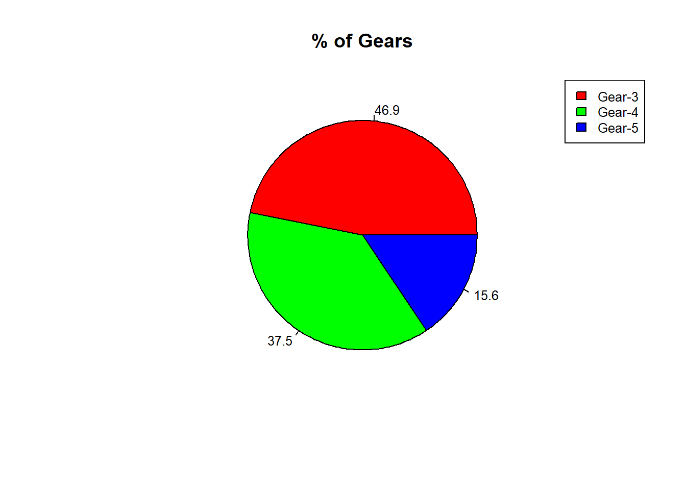

Question 1
Continuation of question 3
A barplot is one of the most common types of plot.
It shows the relationship between a numerical variable and a categorical variable.
For example, you can display the height of several individuals using a bar chart.
In our case we want to display the calculated columns (tempcmax, tempcmin, tempcmean, rhmean, wsmean, wdmean).
Using
?barplotread how to create a bar plot with vertical or horizontal bars.Subset the data so you will have only the needed columns.
Use colMeans on the created data and create a barplot.
Add The title “Beersheva Means”
x axis name as “Categories”
Line width of 5
Each bar will be with different color of your choice - to see all colors in R go to:
Question 2
Now we want to create a summary boxplot, using both speed and distance. To plot these we use the boxplot command with a slightly different syntax boxplot(y ~ x).
Use boxplot to compare the column speed and dist from the built-in data set cars.
Add to this plot the title “Car Speed Against Stopping Distance” with font number 3
Give the axis Their proper names
The boxplot should be in red
Do it again but with violin plots this time.
Question 3
We will return to the file of information about the whales
Read the data file again as whale.
Create a graph of the number of whales in relation to the depth, the plot should be categorized by the noise level.
Give suitable names to axes and give each category a different color.
An example of this can be seen in the presentation on slides 72-73
Save the plot to a pdf file

Bonus question! That is for those who want to go further beyond!
Another good way to present this information is through a pie chart
Create a pie chart showing the proportion of cars from the mtcars data set that have different gear values. Hint! use the pie() function.
